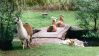
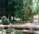
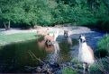
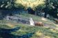

|
|
(Click on Photo to enlarge)

People that pack with their llamas must
spend a great deal of time preparing them for what they may encounter once out
on the terrain. Llama's need to be able to step over unfamiliar obstacles like
logs, branches, rocks. They may also need to cross a stream, and if they have
never been around running water they may be hesitant to walk across the stream.
Notice in the above pictures that two of my llamas are resting on our bridge in
the middle of the stream, there was a time I couldn't even get them to walk
across the bridge let alone kush on it.
(Click on Photo to enlarge)
When we only had our original three llamas here none of
them would walk in the stream let along cross the bridge. We brought another 4
new young males into their pasture, and with a little bribery, we were able to
get two of them over the bridge. The other two remaining on the other side of
the stream went wild running back and forth on the bank trying to figure out
what to do. Lots of crying and anxiety from the two left behind, but the two
that had crossed were already exploring their new territory. It was pretty
funny to watch because out of sheer desperation the other two took off running
towards the bridge at top speed. I swear at the last minute before hitting the
bridge, those boys closed their eyes and just went for it!!! Their first time
coming back over the bridge they were a little unsure, but after that it was
old hat.
|
|
|
(Click on Photo to enlarge)
Because we have so many natural
obstacles on our property our llamas learn a lot of these things on their own
or from each other. Many people have to take their llamas off their property to
find places where they can find obstacles to practice. We also have a large
Cedar grove where our llamas like to go at night, there are lots of old stumps,
big roots above ground, branches. Another portion of our property has steep
hills and small rock borders to jump over.
Web Design By
Sandy Stillwell, PNW Web Design
|